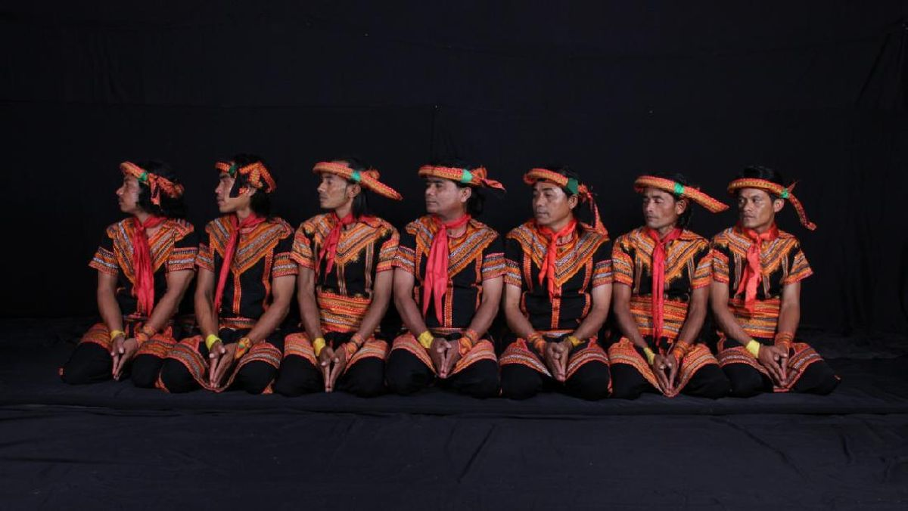
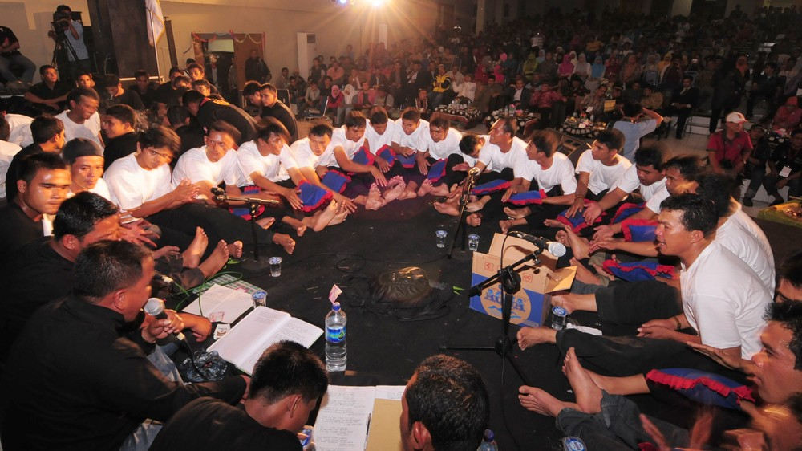
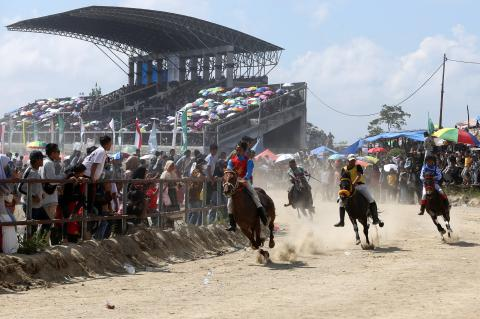
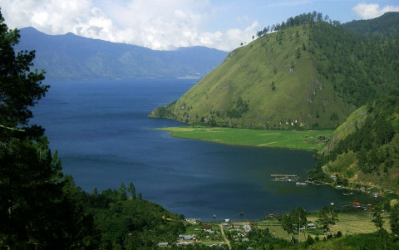
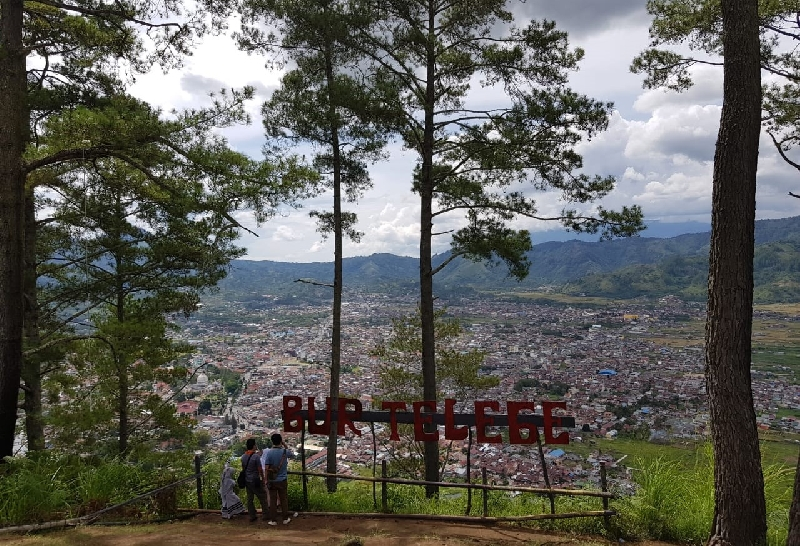
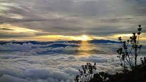
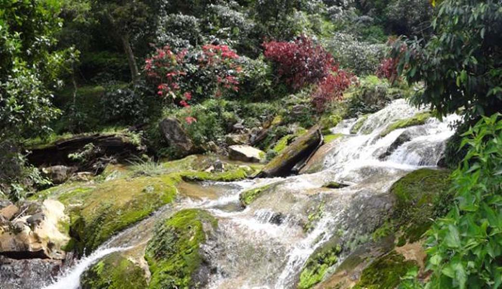

Sejarah
Takengon berasal dari bahasa aceh "Tikungan" yang arti nya kelokan karena untuk menuju ke kota kecil ini harus melewati tanjakan perbukitan dan menelusuri lereng lereng gunung dengan jalan berkelok kelok yang terjal dan curam penuh pepohonan lebat sepanjang jalan, untuk menuju ke ibu kota kabupaten Aceh Tengah ini bisa melalui jalan Lintas Timur Sumatra ex Jl KKA Aceh Utara atau melalui kabupaten Bireuen dan harus melewati 2 gunung aktif di kabupaten Bener Meriah.
Menurut masyarakat gayo sendiri, takengon yang asal kata awalnya tan ku engon,yang artinya pertama kali kulihat. Ini menunjukkan bahwa penduduk pada zaman dulu melihat keindahan alam di kota takengon yang sangat indah.
Seni dan Budaya
Ada beberapa seni dan budaya yang bersal dari takengon diantaranya yang paling terkenal adalah:
- Seni Tari SAMAN

- Seni DIDONG

- Acara Pacuan Kuda

salah satu yang disebutkan diatas adalah tari saman,tari saman ini adalah tarian suku gayo yang berasal dari daerah takengon yang dikembangkan oleh ulama asal aceh yaitu Syeks Saman,tari ini biasanya dilakukan saat merayakan peristiwa-peristiwa penting,bahkan tari saman ini diresmikan oleh UNESCO sebagai warisan dunia tak beda pada tanggal 24 November 2011 di bali.
sedangkan acara pacuan kuda adalah acara rutin yang dilakukan oleh masyarakat di takengon
Wisata
Wisata yang berada di daerah takengon ini lebih condong menampakkan alam yang masih terjaga,sudah bisa dipastikan bahwa wisata wisata yang berada di takengon ini sangatlah indah.
Danau Lut Tawar

Nama yang unik dan membuat siapa saja ingin datang ke Danau Laut Tawar yang ada di Kota Takengon. Warga sekitar pun biasa menyebutnya dengan nama Danau Lut Tawar dimana keduanya merujuk satu destinasi yang sama.
Bur Telege

Untuk melihat keindahan Danau Laut Tawar dari ketinggian selain dari Burni Telong masih ada beberapa titik lainnya. Salah satunya adalah Bur Telege yang ada di Kampung Bale Bujang, Kecamatan Laut Tawar, Kabupaten Aceh Tengah,Berada diatas ketinggian 1.250 meter wisatawan diberi kebebasan memandang sejauh mungkin. Diatas ketinggian ini juga terdapat kafe yang suguhkan Kopi Gayo.
Burni Telong

bagi wisatawan yang memiliki hobi hiking,tekengon juga memiliki sebuah gunung yang bakal diminati oleh para pendaki,dikarenakan keindahan dan kelestarian dari hutan gunung Burni telong ini masih sangat terjaga
Air Terjun Mengaya

bukan hanya tentang gunung dan danau,ketika para wisatawan bekunjung ke takengon,mereka juga dapat merasakan salah satu keindahan alam lainnya yaitu air terjun mangaya ini,memiliki ketinggian 180 meter,objek wisata ini terletak di desa mangaya,kecamatan binta,butuh banyak tenaga untuk sampai ke destinsai ini,namun semua kelelahan yang dilewati akan langsung sirna ketika melihat keindahan dari air terjun ini dan alam disekitarnya.